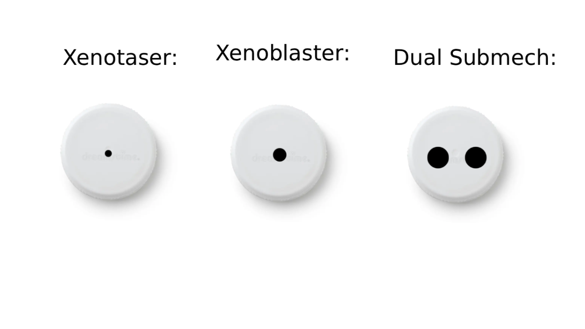

Xenoblaster Modifications
(For data on specific Xenoblaster statistics, scroll to the bottom.)
There are multiple Modifcations you can make to Xenoblasters such as barrel modifications, nozzle modifications, and chamber modifications.
Barrel Modifications
Normally, the Xenoblaster has no barrel at all, however you can add one by sticking a Capri Sun straw into a small nozzle. This will change the official name of your Xenoblaster to a Focused Xenoblaster
Nozzle Modifications
The Xenoblaster nozzle behaves like a static aperture. The wideness of nozzles can change certain things, such as how fast fuel depletes for how stable/long a water beam is when fired. Use a pencil to make a nozzle wider, but note that there is no way to make a nozzle smaller.
Xenotaser
The most popular mod for a Xenoblaster's nozzle is called the Xenotaser (aka a very small nozzle). It gets its name from the fact that when shot, the water beam resembles a double helix similar to a taser's beam. Doing this will change your Xenoblaster's official name to a Xenotaser.
Submech/Dual Submech
A submech (submachine) nozzle is the biggest nozzle reccomended for your Xenoblaster. It drains fuel very quickly, but has a better IR along with better impact. A close alternative to a submech nozzle is a dual submech nozzle, two submech nozzles next to each other.
All common Nozzle Mods:

Chamber Modifications
The chamber (main bottle that stores water) of a Xenoblaster is extremely hard to modify and we have done almost no research on it.
Looking for a specific Xenoblaster? Check out our stats below!
statistic information is currently unavailable...